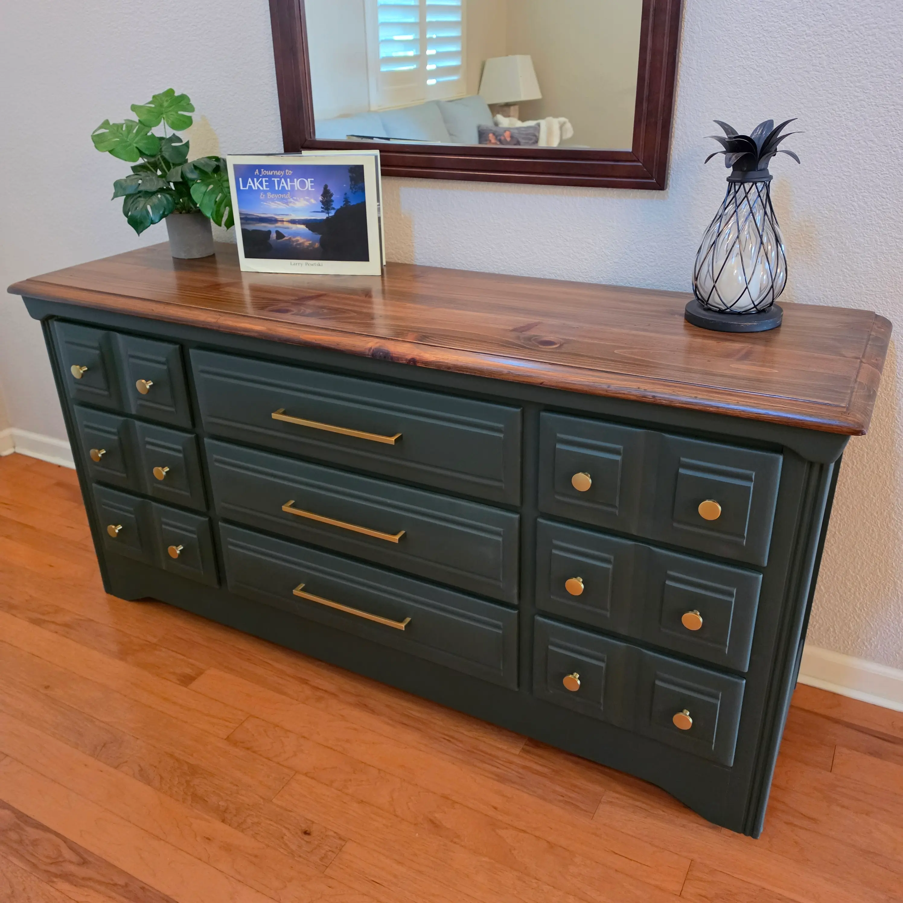

Message Received
Thank you.
We’ve got
your photos.
Your piece is in front of us now. Here’s what happens from here.
We look closely
At the wood, the finish it has now, and what the repair actually asks for.
We come back with a real price
Laid out plainly, so you can see what the work involves and why.
The decision is yours
Take whatever time you need. We’re happy to answer questions either way.
If anything else about the piece comes to mind, whether that is another photo, a color you have in mind, or a date you are working toward, send it along and we’ll add it to the file.
Call or text 916 · 893 · 7467, or email FurniturePros.lincoln@gmail.com.
